O encontro vem antes do like. A marca mostra dois cães face a face que, juntos, formam um coração. Este guia reúne o símbolo, o logotipo, as cores, as fontes e a voz da marca.
O logotipo é a palavra "match dog" em minúsculas, em Fraunces extrabold, com o símbolo no lugar do "o". O texto já está convertido em curvas nos arquivos SVG, então não depende da fonte instalada.
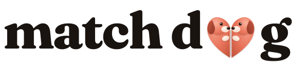
logo.svg · fundo claro
logo-light.svg · fundo coral ou escuro
Dois cães de perfil com os focinhos se tocando no centro. Cada um é uma metade do coração, e uma sombra suave marca onde se encontram. Sem contornos, sem textura: o volume vem de gradientes leves.
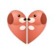
mark.svg · com volume, fundo claro
mark-light.svg · com volume, fundo coral ou escuro
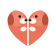
mark-flat.svg · chapado, fundo claro
mark-flat-light.svg · chapado, fundo coral ou escuro
Use a versão chapada em tamanhos pequenos, em impressão de poucas cores, adesivos e bordados. A versão com volume é para telas e peças maiores.
Mantenha ao redor do logotipo uma margem livre igual à altura da letra "d". Nada de texto ou imagem dentro dessa área.
| Peça | Tamanho mínimo |
|---|---|
| Logotipo completo | 120 px de largura em tela, 30 mm em impressão |
| Símbolo com volume | 24 px |
| Símbolo chapado | 16 px |
O coral é a cor da marca. Ele é bonito em áreas grandes, mas tem pouco contraste com texto claro: creme sobre #e8735a dá 2,8:1. Em texto pequeno sobre coral use café (6,1:1) ou troque para o coral escuro.
Fraunces, pesos 600 a 800. Entre letras um pouco apertado (-2%).
DM Sans, pesos 400 a 600. Corpo de texto em 16 px.
As duas fontes são gratuitas e vêm do Google Fonts. No app, elas são carregadas em index.html.
Proposta, ainda não validada
Frases curtas, calor e humor leve. Poucos emojis. Tratamento por "você". O app fala como alguém que quer ver o seu pet feliz, sem pressa e sem pressão.
Quando duas curtidas se encontram
Quando acabam os pets
Lista de matches vazia
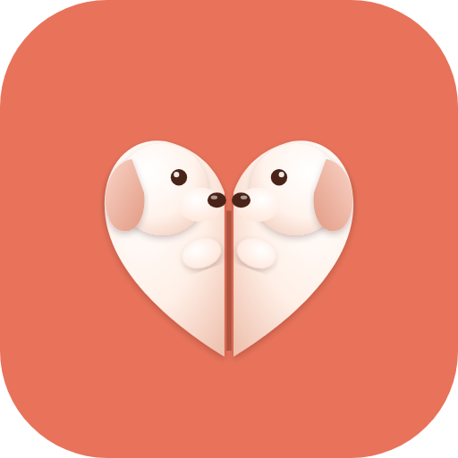
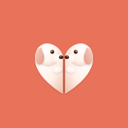
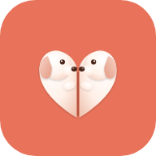
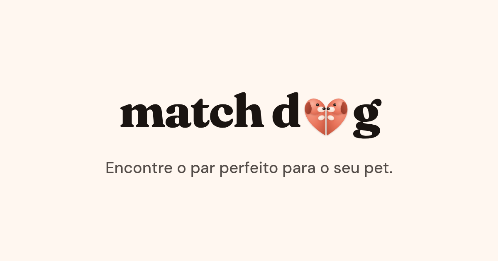
og-image.png · 1200 × 630, prévia de links
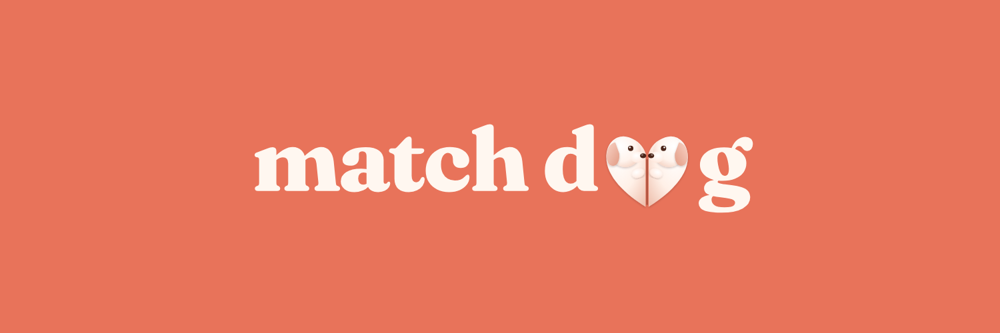
cover-1500x500.png · capa de perfil
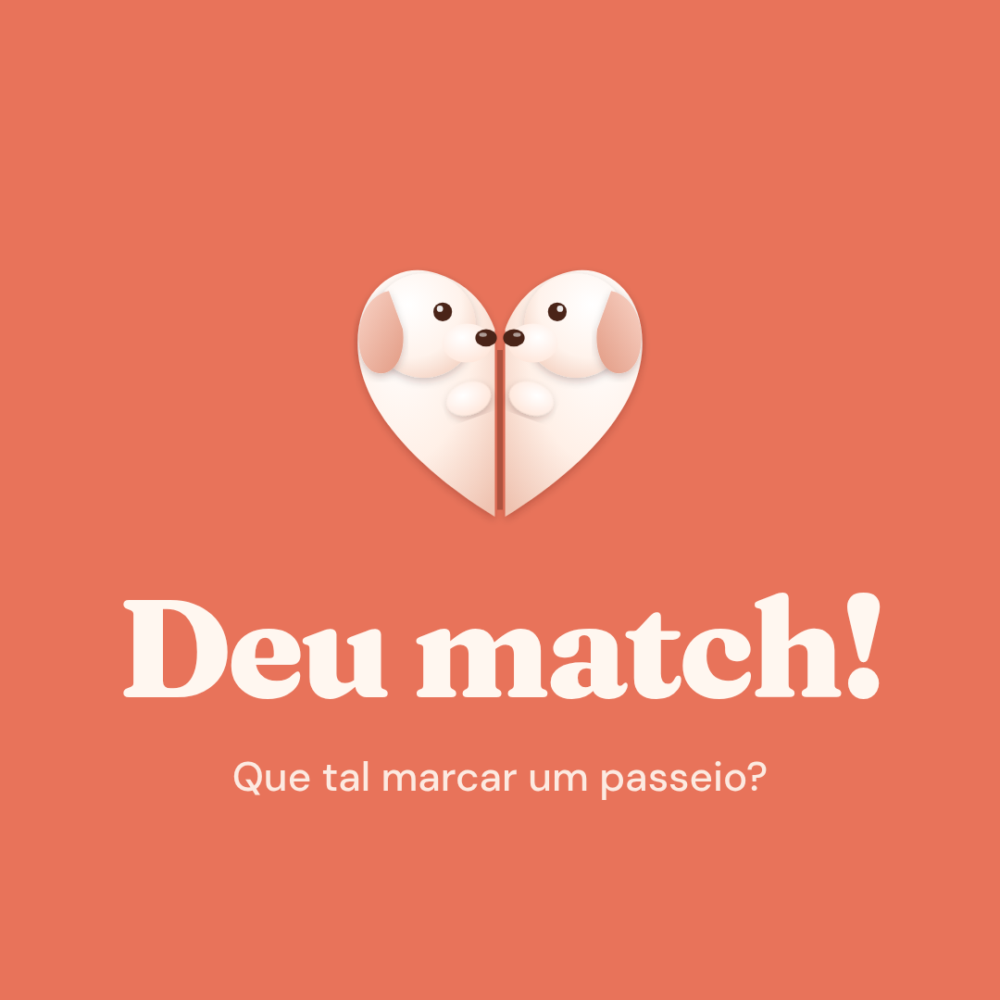
post-deu-match-1080.png · post quadrado
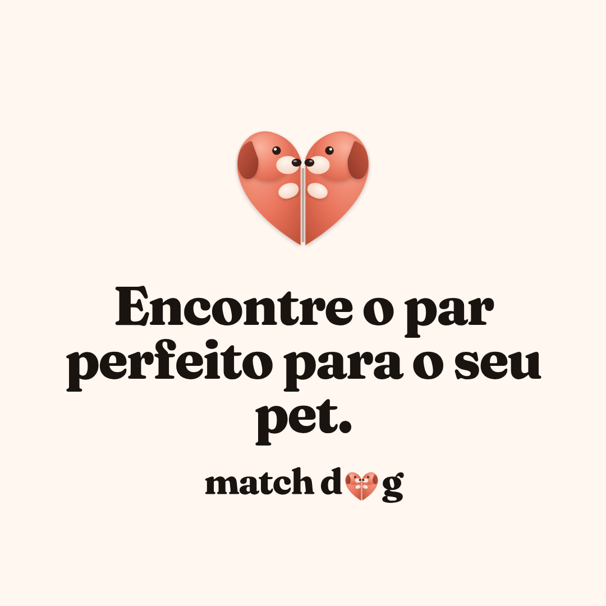
post-par-perfeito-1080.png · post quadrado
A foto de perfil está em avatar-1080.png. Ela fica centralizada para não perder o símbolo quando a rede cortar em círculo.